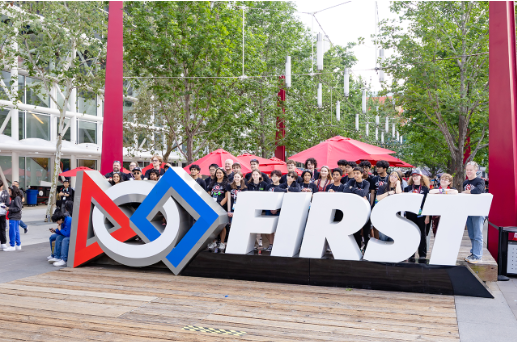
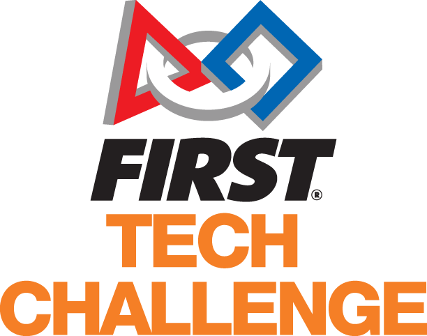

FIRST®(For Inspiration and Recognition of Science and Technology)는 초등학교부터 고등학교까지의 학생들을 대상으로, 포용적이고 팀 중심의 로봇 프로그램을 통해 미래를 준비하도록 돕는 로봇 커뮤니티입니다. 이 프로그램은 학교 수업이나 방과후 활동 등 다양한 형태로 운영될 수 있습니다. FIRST는 1989년 저명한 발명가 딘 케이먼(Dean Kamen)에 의해 설립된 국제 비영리 단체로, 고등학교 이후에도 이어지는 STEM(과학·기술·공학·수학) 학습, 흥미, 역량 향상에 검증된 영향을 미치고 있습니다.

FIRST® Robotics Competition(FRC)는 스포츠의 흥미와 과학·기술의 도전을 결합한 로봇 대회입니다. 엄격한 규칙과 제한된 시간, 자원 속에서 학생들은 팀을 구성해 자금을 마련하고, 팀 브랜드를 만들며, 협업 능력을 키우고, 실제 산업용 규모의 로봇을 설계·제작하고 프로그래밍하여 경쟁에 참여합니다. 이 과정은 고등학생이 경험할 수 있는 가장 현실적인 공학 활동에 가깝습니다. 매 시즌은 전 세계 팀들이 모여 경쟁하는 FIRST® Championship으로 마무리되며, 매우 흥미진진한 무대가 펼쳐집니다.
FIRST® Robotics Competition(FRC)는 스포츠의 흥미와 과학·기술의 도전을 결합한 로봇 대회입니다. 엄격한 규칙과 제한된 시간, 자원 속에서 학생들은 팀을 구성해 자금을 마련하고, 팀 브랜드를 만들며, 협업 능력을 키우고, 실제 산업용 규모의 로봇을 설계·제작하고 프로그래밍하여 경쟁에 참여합니다. 이 과정은 고등학생이 경험할 수 있는 가장 현실적인 공학 활동에 가깝습니다. 매 시즌은 전 세계 팀들이 모여 경쟁하는 FIRST® Championship으로 마무리되며, 매우 흥미진진한 무대가 펼쳐집니다.